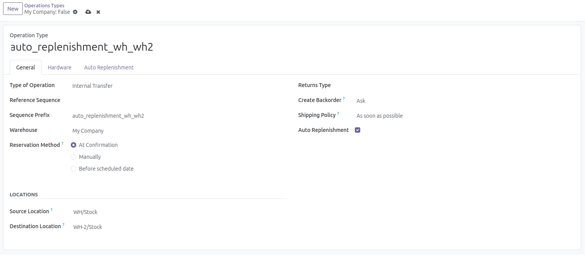
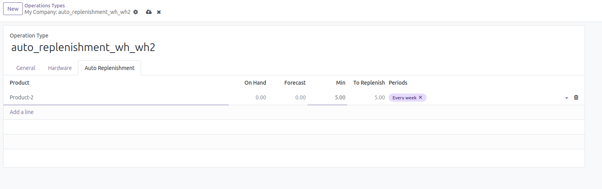
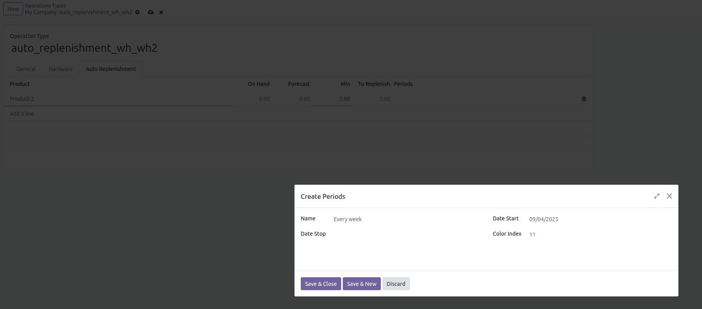
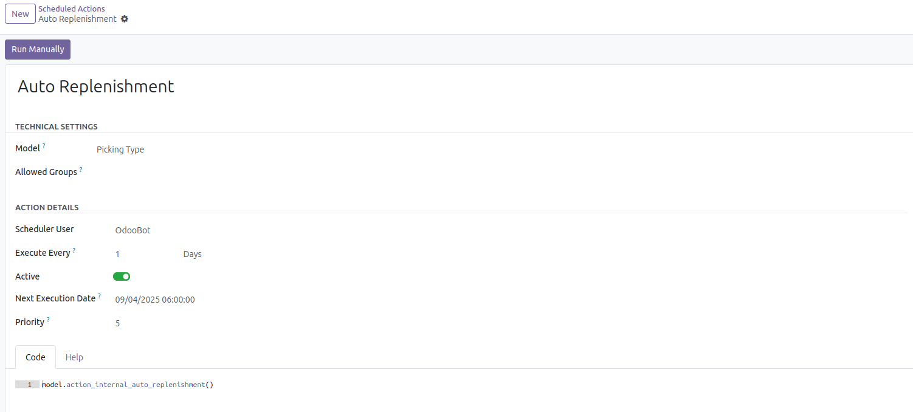

Auto Replenishment
The module provides the ability to automatically replenish product in one warehouse from another one.
Firts steps:
- Open Inventory/Configuration/Warehouse Management/Operation Types
- Create new Operation Type with type "Internal Transfer". Put on flag "Auto Replenishment".
- Source Location is place from which the product will be picked up.
- Destination Location is place to which the product will be delivered.

- In the tab "Auto Replenishment" you can choose products to be replenished.
- You can also specify the minimum required quantity of the selected product in this warehouse and specify the frequency of checking the need to replenish the product in the warehouse.


The need for product replenishment is checked automatically via "Auto Replenishment" scheduler
You can find it in Settings/Automation/Scheduled Actions
